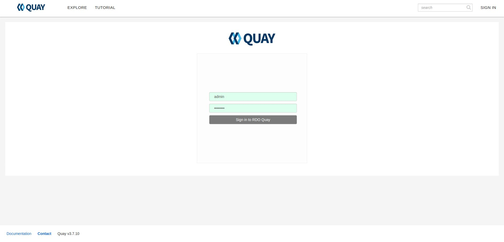

What is Quay ?
As the infra team we deploy and maintain a Quay service which is a distributed and highly available container image registry for the RDO and TripleO project. In the blog post we'll introduce an Ansible role that we have created to ease Quay deployment and configuration.
Additional services
The Quay service can communicate with additional services:
- clair - is an open source project which provides a tool to monitor the security of your containers through the static analysis of vulnerabilities in appc and docker containers. [1].
- quay-mirror - it is a service that provides mirroring functionality of external repository and pull it into current one.
How to deploy ?
The service can be deployed by using dedicated role provided in software-factory/sf-infra project It deploys automatically required services such as:
- redis - an in-memory data structure store, used as a distributed, in-memory key–value database, cache and message broker, with optional durability,
- PostgreSQL - open source object-relational database.
The playbook below relies on the quay role to:
- deploy Quay,
- setup two superusers that would be an owner of own project.
This deployment is minimal and later will see how to use the role to add more configuration to our Quay deployment.
Two things worth to know:
- Only admin user has password with at least 8 characters. Other users password are generated after creating the superuser account.
- To generate a token for an organization, after creating a superuser
account (after bootstrap), login into the Quay as this user, create
new organization: "config", then inside the organization "config",
create new application "admin_token", with:
- "Administer Organization",
- "Administer Repositories",
- "Create Repositories",
- "View all visible repositories",
- "Read/Write to any accessible repositories",
- "Administer User" permissions.
- Bootstrap Quay service
- hosts: quay.dev
vars:
fqdn: quay.dev
enable_clair: false
enable_mirror: false
self_signed_certs: true
initial_config: false
quay_validate_cert: false
database_secret_key: dc52fef2-eed2-4efd-9de6-5af89f86df0a
secret_key: 46bc0133-09b0-486c-bef7-bbe1575f7672
# NOTE: password needs to be at least 8 characters
quay_users:
admin:
email: admin@somemail.com
password: password
token: ""
someuser:
email: someuser@someemail.com
token: ""
tasks:
- name: Setup quay
include_role:
name: rdo/quay
tasks_from: main.yml
Next steps for creating new project, users, etc. are done in section.
Quay - organizations, users, roles...
Quay components
organizations -organizations provide a way of sharing repositories under a common namespace that does not belong to a single user, but rather to many users in a shared setting (such as a company),
teams - organizations are organized into a set of Teams which provide access to a subset of the repositories under that namespace. Teams have defined global permissions in the organization: member, creator and admin. More info here,
users - it is a user account that later would connect to the Quay by using for example: podman login command,
robots - it is an account which can be shared by multiple repositories that are owned by a user organization. That account might be helpful, when you create new container images in CI and you would like just to push the content to the repository,
prototypes - it is default permissions in the organization,
applications - it generates an API token possible permissions:
- administer organization,
- administer repositories,
- create repositories,
- view all visible repositories,
- read/write to any accessible repositories,
- super user access,
- administer user,
- read user information.
The applications can be used by for example pruner script, to set expiration time to the image.
tokens - a string that can communicate with Quay API that has already configured permissions.
Now we enhance our playbook to setup some organizations and playbooks.
- Create project, user, robot etc.: As it was mentioned earlier, token generation are done in application. Create application before execute playbook with quay-project-creation role.
- hosts: quay.dev
vars:
fqdn: quay.dev
enable_clair: false
enable_mirror: false
self_signed_certs: true
initial_config: false
quay_validate_cert: false
database_secret_key: dc52fef2-eed2-4efd-9de6-5af89f86df0a
secret_key: 46bc0133-09b0-486c-bef7-bbe1575f7672
quay_users:
# Token for admin is generated during bootstrap.
# Later it is located in: /var/data/quay/admin_token
admin:
email: admin@somemail.com
password: password
token: "GXI7D7Y4RY7C6KQA23P435SJZTO126WZ"
# Password for someuser is located in: /var/data/quay/someuser_token
# The token is created in created application.
someuser:
email: someuser@someemail.com
token: "33W59Q10MHLWX79G8LAU722DMP2819ZT"
quay_organizations:
# The token variable is necessary just for RDO deployment, where
# new created application token is used by the pruner script to
# cleanup old images. More information in: `Pruner` section.
someuser:
- name: myorganization1
token: ""
- name: myorganization2
token: ""
tasks:
- name: Setup quay - reconfigure
include_role:
name: rdo/quay
tasks_from: main.yml
- name: Configure Quay projects
include_role:
name: rdo/quay-project-creation
tasks_from: main.yml
Quay config mode
The Quay service has a dedicated startup mode, that the administrator would be able to manage service configuration via Web interface.
By using quay role from from sf-infra project, there is an Ansible variable: initial_config.
Below is an example playbook to start the service in "config mode":
- hosts: quay.dev
vars:
fqdn: quay.dev
enable_clair: false
enable_mirror: false
self_signed_certs: true
initial_config: true
quay_validate_cert: false
database_secret_key: dc52fef2-eed2-4efd-9de6-5af89f86df0a
secret_key: 46bc0133-09b0-486c-bef7-bbe1575f7672
quay_users:
admin:
email: admin@somemail.com
password: password
token: ""
tasks:
- name: Setup quay
include_role:
name: rdo/quay
tasks_from: main.yml
After playbook finish, the site should be available on http://quay.dev with credentials:
username: quayconfig
password: secret
You can always use SSH tuneling:
ssh -L 8443:localhost:443 -L 8080:localhost:80 centos@quay.dev
then the site would be available on http://localhost:8080.

Quay user automation
Python Quay tool
The Python Quay tool is a Python base script, that helps automate the Quay deployment. For example, there is some new Openstack release and each release got its own dedicated organization just for it. That needs the following manual actions:
- create organization,
- create robot user,
- create default permissions for robot user (prototype),
- create creators team that will allow create new repositories,
- add the robot user to the team.
All of those actions can be done using the Quay Tool which is communicating with the Quay API and perform required actions.
The tool repository is available here.
Example commands that you can find in the tool:
Set image to be public:
quaytool --api-url https://quay.dev/api/v1 --token <token> --organization myorganization --visibility public
Specify image repository to be public:
quaytool --api-url https://quay.dev/api/v1 --token <token> --organization myorganization --repository test --repository test2 --visibility public
Set all repository to be private, but skip some of them:
quaytool --api-url https://quay.dev/api/v1 --token <token> --organization myorganization --skip test3 --skip test4 --visibility public
List all robots in organization:
quay_tool --api-url https://quay.dev/api/v1 --organization test --token sometoken --insecure --list-robots
Create robot in organization:
quay_tool --api-url https://quay.dev/api/v1 --organization test --token sometoken --create-robot bender
Set write permissions for a user for repositories inside the organziation:
quaytool --api-url https://quay.dev/api/v1 --organization test --token sometoken --user test+cirobot --set-permissions
Restore deleted tag:
quaytool --api-url https://quay.dev/api/v1 --organization test --token sometoken--tag 14ee273e8565960cf6d5b6e26ae92ade --restore-tag
Set the prototype (default permissions) in the organization. By default it creates prototype with write permissions.
For a user:
quaytool --api-url https://quay.dev/api/v1 --organization test --token sometoken --create-prototype --user test+cirobot
For a team:
quaytool --api-url https://quay.dev/api/v1 --organization test --token sometoken --create-prototype --team creators
Pruner
The RDO team is using pruner scripts that are communicating with the DLRN (Delorian) service to get the latest promotion hash. Later, images containing the hash in the tag, will be skipped from deletion.
The pruner script is using Quay API. To communicate with the API, first you need to create a dedicated application in Quay inside your organization with following permissions:
- administer organization,
- view all visible repositories.
You can find the pruner scripts used by the RDO project here. Other scripts and crontab job you can find in the sf-infra project in roles/rdo/quay.
Swagger
Swagger is a suite of tools for API developers from SmartBear Software and a former specification upon which the OpenAPI Specification is based.
You can start running the Swagger tool in the container and communicate with Quay API.
How to start Swagger:
# Start swagger container
podman run -p 8888:8080 -e API_URL=https://quay.dev/api/v1/discovery docker.io/swaggerapi/swagger-ui
# If you are using local instance with firewall rules, you can tunel
# the ssh connection and redirect the port
# OPTIONAL
ssh -L 18888:localhost:8888 centos@quay.dev
After running above commands, you should be able to reach the swagger Web UI interface on URL: http://quay.dev:8080.
More information how to use Swagger with Quay you can find here.
Example how to automate Quay organization deployment base on TripleO release
The RDO Project has automated the creation of projects, users, robots, prototypes, etc. There is a dedicated role.
The bootstrap new organization in tripleo project is done in two steps:
- Add into the quay_organizations Ansible variable, to the tripleo object a new entry, that creates a new organization - let's call it my-new-project. That entry should have empty value for token parameter, for example:
- hosts: quay.dev
vars:
quay_organizations:
tripleo:
- name: tripleomastercentos9
token: "some token generated in tripleomastercentos9 organization application"
prune_days: 7
- name: my-new-project
token: ""
- When the Ansible run is done, create a new application token inside the new created organization ( my-new-project ), and modify the playbook variables and add into your organization a token, that you generated. The step how to generate the token has been described in the Pruner section. Now the playbook vars will look like:
- hosts: quay.dev
vars:
quay_organizations:
tripleo:
- name: tripleomastercentos9
token: "some token generated in tripleomastercentos9 organization application"
prune_days: 7
- name: my-new-project
token: "zjakss7oXpNAM8F22iB02abb9ysWb3rbN2raAApm"
prune_days: 7
Example of the whole Ansible playbook, you can find in Quay components section.
Also please note, that same actions can be perfomed without the Ansible by using Web browser and Quay Web site. All steps are described in the README file.
Documentation
Quay provides documentation that has a troubleshooting chapter. The documentation can be found here.